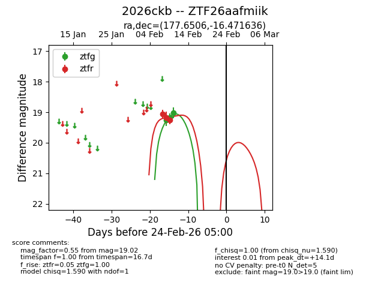
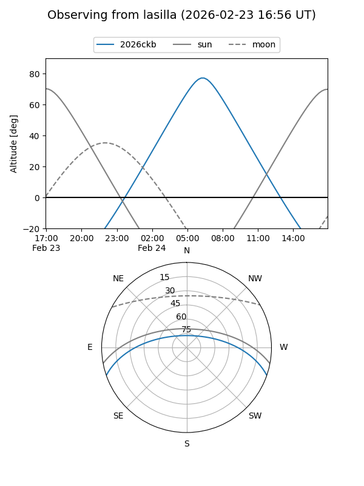
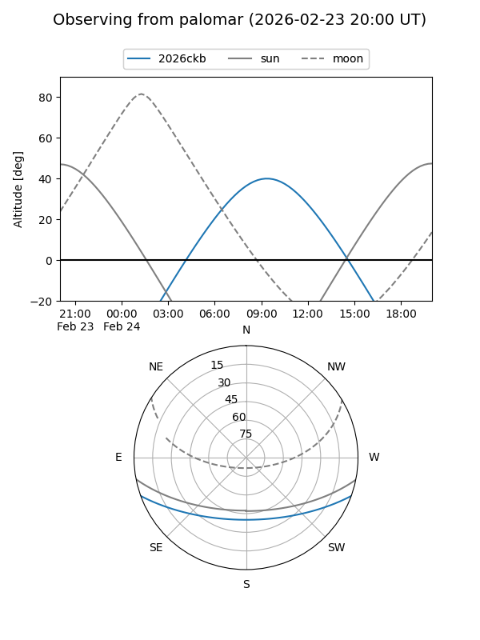

2026ckb
Target 2026ckb at 2026-02-24 09:08
Aliases and brokers:
FINK: link
Lasair: link
ALeRCE: link
TNS: link
YSE: link
alt names
ZTF26aafmiik (ztf,fink_ztf)
2026ckb (tns,yse)
Coordinates:
equatorial (ra, dec) = 177.6506,-16.47164
equatorial (HMS+DMS) = 11:50:36.14,-16:28:17.89
galactic (l, b) = (282.4721,+43.96997)
Flags:
Photometry:
last ztfg=19.02, ztfr=19.25
3 ztfg, 3 ztfr detections
Lightcurve

Visibility


Additional plots